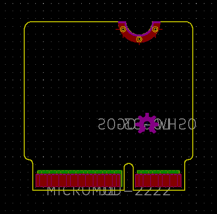

This project template is the basis for a processor board
compatible with the Sparkfun MicroMod standard.
Sparkfun documentation about MicroMod
A MicroMod PCB must be 4 layer, 0.8mm thickness, ENIG finish
(for the gold fingers) with a 20 degrees edge bevel.
The board outline looks like the following:

(c)2020 Yohann Belair